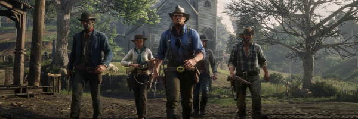
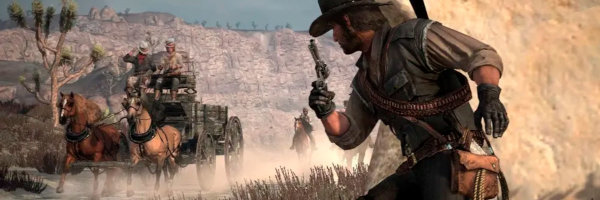
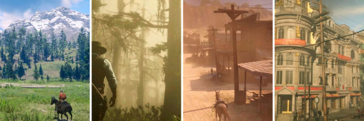

Red Dead Redemption 2 - Resumo da SemanaA vida no Velho Oeste, com muito mais aventuras... |
|

A Jornada dos FugitivosAcompanhe a trajetória dos foras-da-lei, cavalos e caçadores de recompensas. Neste post, exploramos a essência da vida no Velho Oeste... Leia Mais

Vida na FronteiraO que é necessário para sobreviver na fronteira? Descubra as lutas, triunfos e histórias desconhecidas da vida no Velho Oeste americano... Leia Mais

Fugitivos e MoralidadeExplore os dilemas morais enfrentados pelos personagens de Red Dead Redemption 2 e o que significa ser um fora-da-lei... Leia Mais |
|
Você está recebendo este e-mail porque faz parte da nossa gangue de foras-da-lei. |